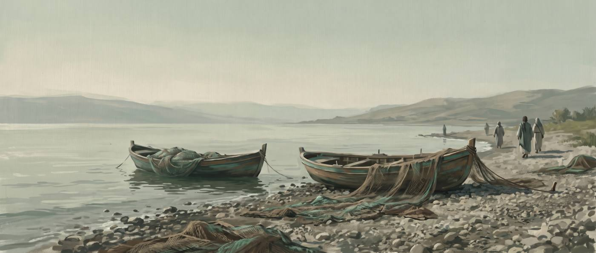
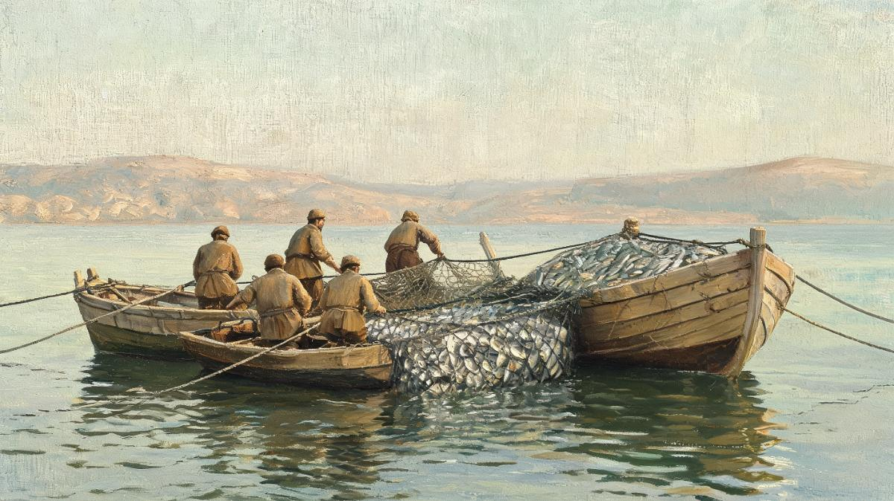
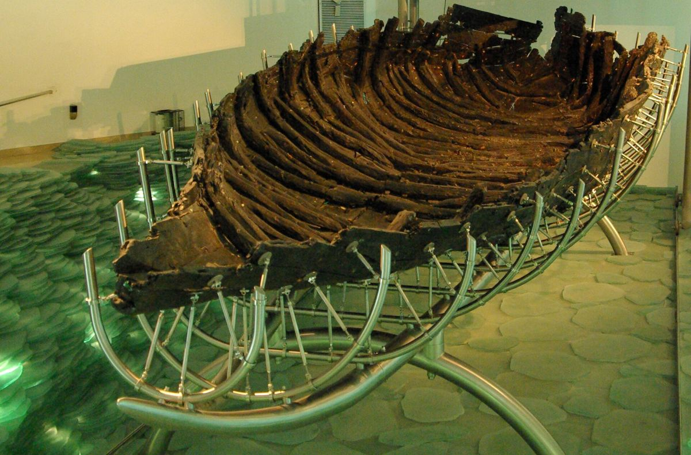
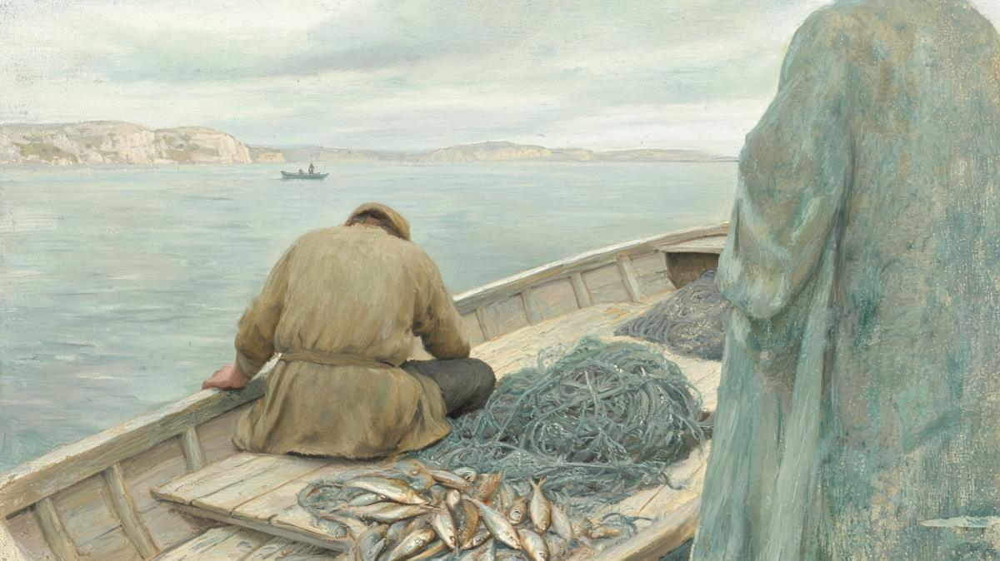

주여 나를 떠나소서
밤새 빈 그물이었는데 배 두 척이 가라앉을 만큼 고기가 잡혔어요. 그 순간 베드로는 기뻐하는 대신 예수님 무릎 아래 엎드려 떠나 달라고 해요. 왜 그랬을까요?
베드로는 이날 예수님을 처음 만났을까요?
아니에요. 네 복음서를 나란히 놓으면 이 배 위의 장면은 첫 만남이 아니에요.
시몬 베드로가 이를 보고 예수의 무릎 아래에 엎드려 이르되 주여 나를 떠나소서 나는 죄인이로소이다 하니
누가복음 5:8 · 개역개정
예수님과 베드로가 만나는 장면은 네 복음서에 다섯 번 나와요. 장소도 다르고, 누가 먼저 움직이는지도 달라요.
| 본문 | 어디서 | 누가 먼저 | 베드로의 말 | |
|---|---|---|---|---|
| A | 요한복음 1:35–42 | 요단 강 건너편 | 동생 안드레가 형을 데려옴 | 없음. 예수님이 “게바”라는 이름을 주심 |
| B | 마가복음 1:16–20 마태복음 4:18–22 | 갈릴리 바닷가 | 예수님이 지나가다 부르심 | 없음. 곧 그물을 버리고 따름 |
| C | 마가복음 1:29–31 누가복음 4:38–39 | 가버나움 시몬의 집 | 회당에서 나와 들어가심 | 없음. 장모의 열병을 고치심 |
| D | 누가복음 5:1–11 | 게네사렛 호수 | 예수님이 시몬의 배에 타심 | “선생님”(5절) → “주여, 떠나소서”(8절) |
| E | 요한복음 21:1–14 | 디베랴 바다 | 부활하신 예수님이 물가에 서심 | “주님이시라” 듣고 바다에 뛰어듦 |
여기서 두 가지가 눈에 띄어요.
첫째, 마가와 누가는 순서가 반대예요. 마가는 부름(B)을 먼저 적고 장모 치유(C)를 나중에 적어요. 누가는 장모 치유(4:38–39)를 먼저 적고 부름(5:1–11)을 나중에 적어요. 그래서 누가복음을 처음부터 읽어 온 독자에게 베드로는 이미 회당에서 귀신이 쫓겨나는 것을 보고, 자기 집에서 장모가 일어나는 것을 본 사람이에요. 누가는 4:38에서 시몬을 아무 소개 없이 “시몬의 집”이라고 불러요. 독자가 아는 사람으로 전제한 거예요.
둘째, 마가와 마태의 부름 장면에서 베드로는 한 마디도 하지 않아요. 베드로의 입이 열리는 첫 만남 장면은 누가복음뿐이에요. 그 첫마디가 “떠나소서”예요.
큰 틀은 분명해요. 요단 강에서 처음 알게 되고(A) → 갈릴리에서 부름받고(B) → 장모가 낫는(C) 순서예요. 다만 누가복음 5장(D)이 마가복음 1장(B)과 같은 날의 다른 기록인지, 며칠 뒤의 별개 사건인지, 아니면 부활 후 장면(E)이 앞으로 당겨진 것인지는 학자마다 갈려요. 아래 정리표에 다섯 해법을 모아 두었어요. 결정적으로 입증된 것은 없어요.
다만 5:8을 읽는 데 필요한 사실 하나는 확실해요. 누가의 이야기 안에서 베드로는 예수님을 처음 보는 사람이 아니에요. 이미 기적을 두 번 본 사람이 배 위에서는 무너져요. 그 차이가 이 페이지의 질문이에요.
“선생님”이 “주여”로 바뀌어요
같은 장면 안에서 호칭이 달라져요. 그 사이에 그물이 있어요.
시몬이 대답하여 이르되 선생님 우리들이 밤이 새도록 수고하였으되 잡은 것이 없지마는 말씀에 의지하여 내가 그물을 내리리이다 하고
누가복음 5:5 · 개역개정
5절의 “선생님”은 에피스타타(ἐπιστάτα)예요. 이 낱말은 신약 전체에 일곱 번 나오는데 일곱 번이 다 누가복음이에요. 부르는 사람은 베드로, 제자들, 요한, 나병환자 열 명이에요. 제자나 도움을 청하는 사람이 쓰는 호칭이죠.

8절의 “주여”는 퀴리에(κύριε)예요. 누가복음에서 사람이 예수님을 향해 이렇게 부르는 것은 여기가 처음이에요. 다음은 5:12의 나병환자예요.
세 번째 타일이 재미있어요. 누가는 5:3, 5:4, 5:5에서 내내 “시몬”이라 부르다가 8절에서만 “시몬 베드로”라 하고, 10절에서 다시 “시몬”으로 돌아가요. “베드로”라는 이름 자체가 누가복음에 처음 나오는 자리가 여기예요. 그 이름의 뜻은 열두 제자를 세우는 6:14에 가서야 설명해요. 요한복음 21:7도 그물 기적 직후에 “시몬 베드로”라고 불러요. 학자들은 이것을 누가가 쓴 자료의 흔적으로 보기도 하고, 고백의 순간에 장차의 이름을 미리 붙인 것으로 보기도 해요. 어느 쪽이든 누가가 이 절에 무게를 실었다는 점은 같아요.
왜 “죄인”이라고 했을까요?
구약에서 거룩한 분을 마주친 사람들이 하던 말이에요. 짜임이 같아요.
그 때에 내가 말하되 화로다 나여 망하게 되었도다 나는 입술이 부정한 사람이요 입술이 부정한 백성 중에 거주하면서 만군의 여호와이신 왕을 뵈었음이로다 하였더라
이사야 6:5 · 개역개정
이사야는 성전에서 하나님을 보고 “나는 입술이 부정한 사람”이라고 말해요. 순서가 봄 → “나는 이런 사람” → 정결 → 파송이에요. 누가복음 5장도 봄(8절 “이를 보고”) → “나는 죄인” → “두려워하지 말라” → “사람을 취하리라”로 흘러요. 히브리어와 70인역 원문으로 이런 장면을 모아 봤어요.
| 본문 | 누가 | 한 말 | 그 다음 |
|---|---|---|---|
| 이사야 6:5 | 이사야 | “화로다 나여 … 나는 입술이 부정한 사람” אִישׁ טְמֵא־שְׂפָתַיִם אָנֹכִי | 숯불로 입술을 정결케 함, 파송(6:8) |
| 사사기 6:22–23 | 기드온 | “슬프도소이다 … 여호와의 사자를 대면하여 보았나이다” | “두려워하지 말라 죽지 아니하리라”, 파송(6:14) |
| 사사기 13:22 | 마노아 | “우리가 하나님을 보았으니 반드시 죽으리로다” | 아내가 “죽이시려 했으면 제물을 받지 않으셨을 것” |
| 출애굽기 20:19 | 이스라엘 백성 | “하나님이 우리에게 말씀하시지 말게 하소서 우리가 죽을까 하나이다” | 모세가 중재 |
| 열왕기상 17:18 | 사르밧 과부 | “당신이 내게 와서 내 죄를 생각나게 하고 …” לְהַזְכִּיר אֶת־עֲוֺנִי | 아들이 살아남, “당신은 하나님의 사람”(17:24) |
맨 마지막 줄을 보세요. 하나님의 사람 엘리야가 가까이 오자 과부는 “내 죄를 들추러 왔느냐”고 반응해요. 그리고 이 과부는 누가복음에서 바로 앞 장, 나사렛 회당 설교(4:26)에 나온 그 “사렙다 과부”예요. 누가가 일부러 이었다는 근거는 없어요. 그래도 “거룩한 분이 다가오면 내 죄가 드러난다”는 생각의 틀이 구약에 이미 있었다는 것은 분명해요.
그리고 사사기 6:23의 대답이 예수님의 대답과 같아요.
세베대의 아들로서 시몬의 동업자인 야고보와 요한도 놀랐음이라 예수께서 시몬에게 이르시되 무서워하지 말라 이제 후로는 네가 사람을 취하리라 하시니
누가복음 5:10 · 개역개정
“무서워하지 말라”(μὴ φοβοῦ)는 누가복음에서 이미 세 번 나온 말이에요. 그런데 앞의 세 번은 모두 천사가 했어요.
천사가 서던 자리에 예수님이 서요. 베드로가 “죄인”이라고 말한 것은 도덕적 반성이라기보다 거룩한 분 앞에 선 사람의 반응이에요. 그리고 그 반응에 대한 답도 구약과 같아요. 두려워 말라, 그리고 가라.
어떤 죄인일까요? 직업 때문일까요?
아니에요. 누가는 어부를 죄인 취급한 적이 없어요.
“죄인”(ἁμαρτωλός)은 누가복음에 열여덟 번 나와요. 마태 다섯 번, 마가 여섯 번보다 훨씬 많아요. 누가가 아끼는 낱말인데, 그 첫 용례가 바로 5:8 베드로의 입이에요.
| 어디 | 누가 말하나 | 누구를 |
|---|---|---|
| 5:8 | 베드로 자신 | 자기 — “나는 죄인이로소이다” |
| 5:30, 7:34, 15:2, 19:7 | 바리새인·서기관·군중 | 세리, 예수님의 밥상 친구, 삭개오 |
| 7:37, 7:39 | 서술자·바리새인 | 향유 부은 여인 |
| 15:7, 15:10 | 예수님 | 회개하는 죄인 한 사람 |
| 18:13 | 세리 자신 | 자기 — “불쌍히 여기소서 나는 죄인이로소이다” |
| 24:7 | 천사 | “죄인의 손”에 넘겨지는 인자 |
표를 보면 두 가지가 보여요. 누가복음에서 이 낱말을 처음 쓰는 사람이 바리새인이 아니라 베드로예요. 바로 다음 이야기(5:30)에서 바리새인들이 같은 낱말을 남에게 써요. 그리고 스스로를 죄인이라 부르는 사람은 베드로와 세리, 둘뿐이에요. 둘 다 예수님이 받아들이세요.
본문에 근거가 없어요. 누가는 세리, 창녀, 이방인은 죄인 범주에 넣지만 어부를 거기 넣은 적이 없어요. 열여덟 번 중 직업을 이유로 든 곳은 한 곳도 없어요. 5:8의 “죄인”은 신분이 아니라 자기 인식이에요.
왜 하필 그물 앞에서 무너졌을까요?
회당 기적도, 장모의 치유도 봤는데 그때는 고백이 없었어요.
여기서 누가의 순서 뒤집기가 뜻을 가져요. 베드로는 귀신이 쫓겨나는 것을 회당에서 봤고(4:35), 장모가 열병에서 일어나는 것을 집에서 봤어요(4:39). 그때 누가는 베드로의 반응을 한 줄도 적지 않아요. 회당은 남의 일이었고 장모는 집안 일이었어요.
그물은 자기 손의 일이에요. 5절에서 베드로는 “밤이 새도록 수고하였으되 잡은 것이 없다”고 말해요. 갈릴리 호수는 밤 고기잡이가 낮보다 낫다고 알려져 있어요. 어부가 밤새 빈손이었는데, 어부가 아닌 분이 대낮에 깊은 데로 나가 그물을 내리라고 하세요. 자기 전문 영역에 반하는 명령이에요. 그리고 자기 배, 자기 그물, 자기 호수 안에서 그물이 찢어지고 배가 가라앉으려 해요.
그 배가 어느 정도 크기였는지 짐작하게 하는 유물이 하나 남아 있어요. 1986년 가뭄 때 호수 북서쪽 기슭에서 나온 1세기 어선이에요. 길이 8미터 남짓, 너비 2미터 남짓이고 노잡이 넷이 저었어요. 이런 배 두 척이 가라앉을 만큼이면 어부 대여섯이 밤새 잡아도 못 채울 양이에요.

누가는 이 놀람을 탐보스(θάμβος)라는 낱말로 적어요(9절). 신약에 세 번뿐인 낱말인데, 그중 하나가 바로 앞 장 가버나움 회당에서 군중이 놀란 자리(4:36)예요. 베드로는 4:36의 놀람을 군중 속에서 겪었고, 5:9에서는 자기 배 안에서 겪어요. 그래서 고백의 말이 “당신은 거룩하십니다”가 아니라 “나는 죄인입니다”예요. 예수님에 대한 말(“주여”)은 문장 끝에 붙고, 자기에 대한 말이 본문이에요.
정말 떠나 주기를 바랐을까요?
아니에요. 떠나라는 문장이 “주여”로 끝나요.

헬라어 8절의 어순을 그대로 옮기면 이래요. “떠나소서 나에게서, 죄인인 사람이니까요 나는, 주여.” 명령이 앞에 오고, 이유가 가운데 오고, “주여”가 맨 끝이에요. 떠나기를 정말 바라는 사람은 그 상대를 “주”라고 부르지 않아요. 그리고 11절에서 베드로는 모든 것을 버리고 따라가요.
누가복음에서 예수님께 “떠나 달라”고 한 사람이 셋 있어요. 나란히 놓으면 베드로의 말이 어디에 서는지 보여요.
| 어디 | 누가 | 한 말 | 두려워한 것 |
|---|---|---|---|
| 4:34 | 회당의 귀신 | “우리를 멸하러 왔나이까 … 당신은 하나님의 거룩한 자니이다” | 멸망 |
| 5:8 | 베드로 | “나를 떠나소서 나는 죄인이로소이다” | 자기 |
| 8:37 | 거라사 사람들 | “떠나가시기를 구하더라” — 크게 두려워하여 | 재산·질서 |
한 가지가 더 있어요. “나를 떠나소서”(ἔξελθε ἀπ’ ἐμοῦ)와 똑같은 꼴의 명령이 누가복음에 한 번 더 나오는데, 4:35에서 예수님이 귀신에게 하신 말이에요. “그 사람에게서 나오라”(ἔξελθε ἀπ’ αὐτοῦ). 거룩을 알아본 존재가 거리를 원한다는 틀이 한 장 뒤 베드로의 입에서 되풀이돼요. 다만 귀신은 멸망을 두려워하고 거라사 사람들은 잃을 것을 두려워하는데, 베드로만 자기를 두려워해요. 셋 중 죄인이라는 말을 쓴 사람은 베드로뿐이에요.
19세기 케임브리지 주석은 “말은 배에서 내려 달라는 뜻이지만 두려움은 사랑에 삼켜진다”고 읽었어요. 매클라렌은 “얕은 죄의식은 그리스도에게서 도망치게 하고, 깊은 죄의식은 그 품으로 밀어넣는다”고 했어요. 5세기 알렉산드리아의 키릴로스는 베드로가 “부정한 자로서 정결한 분을 감히 맞이하지 못했다”고 봤어요.
정리하면
| 항목 | 근거 | 판정 |
|---|---|---|
| 누가의 이야기에서 베드로는 예수님을 처음 보는 사람이 아니다 | 4:38 시몬을 소개 없이 등장시킴, 장모 치유가 부름보다 앞 | 확인 |
| “죄인”은 구약 신현 장면의 반응이다 | 사 6:5 · 삿 6:22–23 · 13:22 · 출 20:19 원문 대조, 5:10 “무서워 말라”가 삿 6:23과 같음 | 확인 |
| 누가가 이 절을 네 가지 “처음”으로 표시했다 | 첫 “주여” 호격, 유일한 “시몬 베드로”, 첫 “죄인”, 예수님이 처음 말하는 “무서워 말라” | 확인 |
| 고백을 부른 것은 자기 직업 한복판의 기적이다 | 회당·장모 때는 반응 없음, 5:5 밤샘 실패 ↔ 5:6 대낮 성공 | 가설 |
| 떠나 주기를 실제로 바랐다 | “주여”가 문장 끝, 5:11 다 버리고 따름 | 아님 |
| 어부라서 죄인 취급을 받았다 | 누가복음 “죄인” 18회에 직업 근거 0 | 근거 없음 |
| 특정한 죄를 자각했다 | 본문에 죄목 없음. 키릴로스의 “이전 죄의 기억”은 본문 밖 추정 | 본문이 말하지 않음 |
| 누가복음 5장은 마가복음 1장과 같은 날이다 | 누가가 마가의 부름 자리에 이 이야기를 둔 것은 분명하나, 별개 사건일 가능성도 남음 | 미결 |
| 부활 후 장면(요 21)이 앞으로 당겨진 것이다 | “시몬 베드로”와 그물 기적이 겹침. 찬반 갈림 | 미결 |
어려운 말 풀이
- 신현 神顯
- 하나님이 사람 앞에 나타나시는 장면이에요. 구약에서는 본 사람이 거의 늘 “죽을까” 두려워해요.
- 호격 呼格
- 누군가를 부를 때 쓰는 낱말의 꼴이에요. “주여”, “선생님”처럼 문장 안에서 상대를 부르는 자리예요.
- 에피스타타 ἐπιστάτα
- “선생님, 어른”. 누가복음에만 있는 호칭으로, 제자나 도움을 청하는 사람이 써요.
- 탐보스 θάμβος
- “놀람, 얼어붙음”. 신약에 세 번뿐이고 그중 둘이 누가복음 4:36과 5:9예요.
- 70인역 七十人譯
- 구약을 헬라어로 옮긴 오래된 번역이에요. 신약 저자들이 구약을 인용할 때 주로 참고한 본문이에요.
- 공관복음 共觀福音
- 마태·마가·누가 세 복음서예요. 같은 사건을 나란히 놓고 볼 수 있어서 이렇게 불러요.
- 베자 사본 Codex Bezae
- 5~6세기의 헬라어·라틴어 대역 사본이에요. 다른 사본과 다르게 읽는 자리가 많아서 늘 따로 확인해요.
근거 자료
본문 통계는 SBL 헬라어 신약(SBLGNT)의 형태소 자료를 직접 집계한 값입니다. 다른 판본에서는 한두 번 차이가 날 수 있습니다.
사본 문제를 밝혀 둡니다. 누가복음 5:8은 비평 본문과 비잔틴 다수 본문이 낱말 단위까지 일치합니다. 다만 베자 사본(D)은 다르게 읽습니다. “시몬”만 있고 “베드로”가 없으며, “무릎” 대신 “발”이고, “간청합니다”(παρακαλῶ)가 덧붙어 있습니다. “베드로” 생략은 W·D·f13 사본에 있는데, 3절과 5절의 “시몬”에 맞춘 조화로 보는 것이 일반적입니다. 베자 사본은 5절의 “선생님”도 다른 낱말(διδάσκαλε)로, 10절 후반도 마가복음 1:17에 가까운 꼴로 바꾸어 놓았습니다.
구약 다섯 본문은 히브리어 본문(WLC)과 70인역(Swete)을 절 단위로 직접 대조했습니다. 열왕기상 17:18의 “내 죄를 생각나게 하고”는 70인역도 같은 뜻(τοῦ ἀναμνῆσαι ἀδικίας μου)으로 옮깁니다.
현대 주석서(Fitzmyer, Nolland, Bovon, Bock, Marshall, Wolter)의 견해는 아래 Szkredka의 논문 각주를 통해 간접 확인한 것이며, 원저를 직접 읽지는 못했습니다.
- SBLGNT / MorphGNT 형태소 자료 — ἐπιστάτης · ἁμαρτωλός · θάμβος · προσπίπτω · κύριε(호격) · μὴ φοβοῦ · ἔξελθε ἀπό · Σίμων Πέτρος 전수 집계
- 비잔틴 다수 본문 RP2018 — 누가복음 5:5, 5:8 이문 대조
- 베자 사본 누가복음 5장 — Scrivener 전사본
- WLC 히브리어 본문 · 70인역(Swete) — 이사야 6:5, 사사기 6:22–23 · 13:22, 출애굽기 20:19, 열왕기상 17:18
- 알렉산드리아의 키릴로스 『누가복음 설교』 12 (Payne Smith 영역본)
- 19세기 주석 — Bengel, Cambridge Bible, Ellicott, Gill, Expositor’s Greek Testament, MacLaren (누가복음 5:8 항목)
- S. Szkredka, “The Call of Simon Peter in Luke 5:1–11: A Lukan Invention?”, The Biblical Annals 8/2 (2018) 173–189 — 자료 문제와 “시몬 베드로” 유일 용례 논의
- Yung Suk Kim, “The Call Story of Peter in Luke 5:1–11”, Currents in Theology and Mission 51/4 (2024) 39–42 — 호칭 전환과 4:38–39의 관계
- T. Wiarda, Peter in the Gospels (Mohr Siebeck 2000) — 베드로 서사의 “역전 패턴” (Szkredka 경유 2차 인용)
- 대한성서공회 『성경전서 개역개정판』 (장절 표기와 짧은 인용)